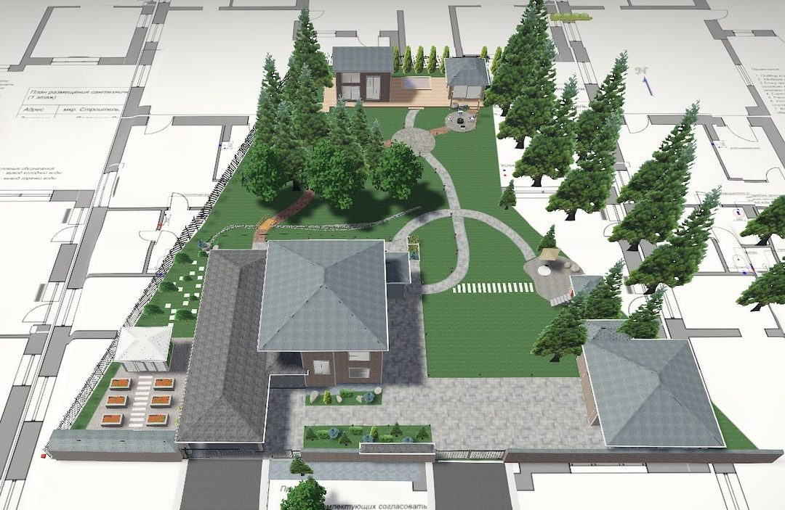
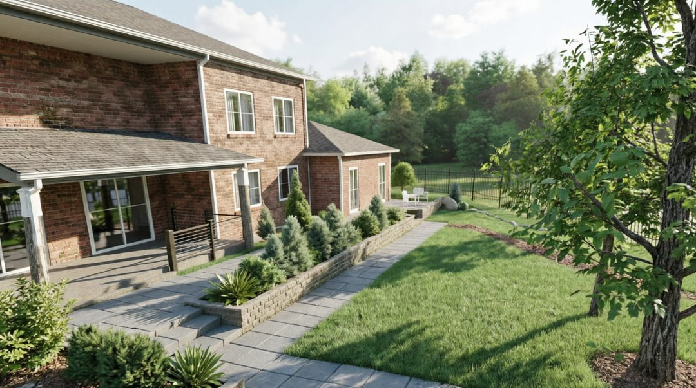
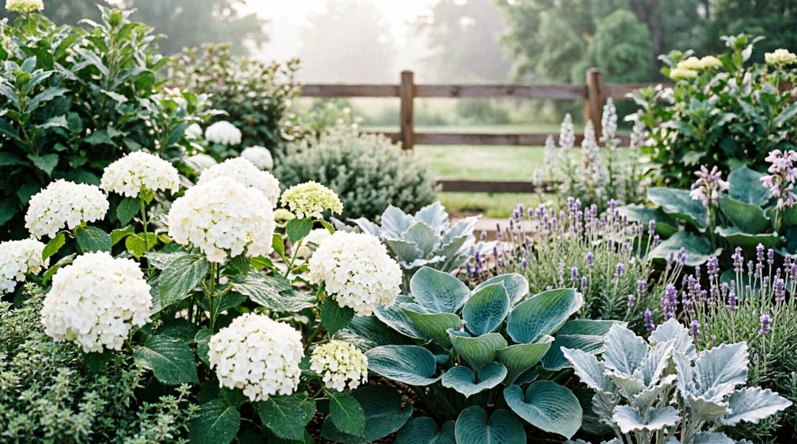
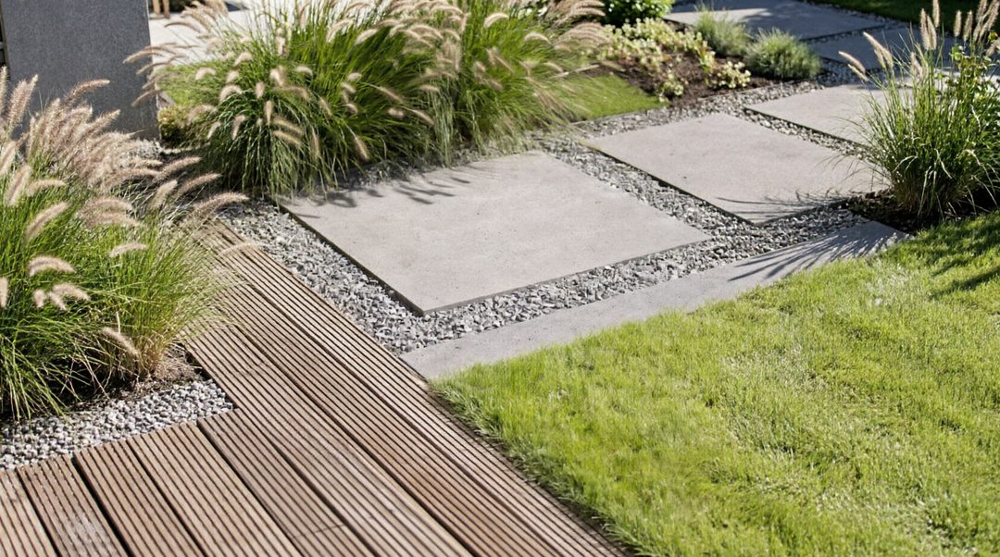
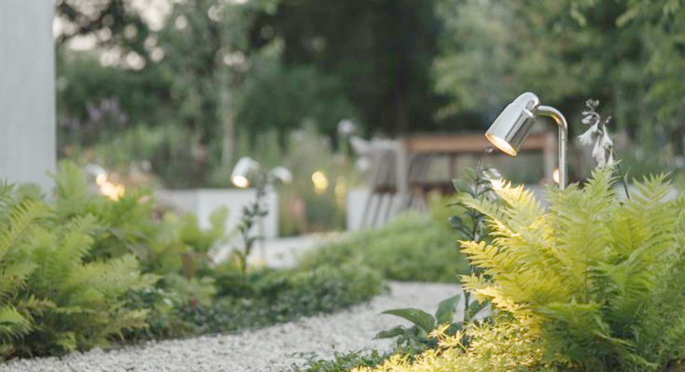
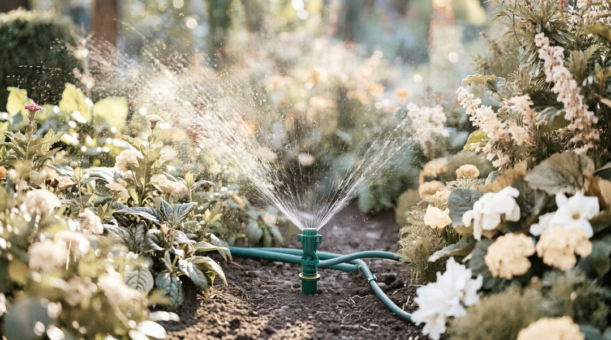
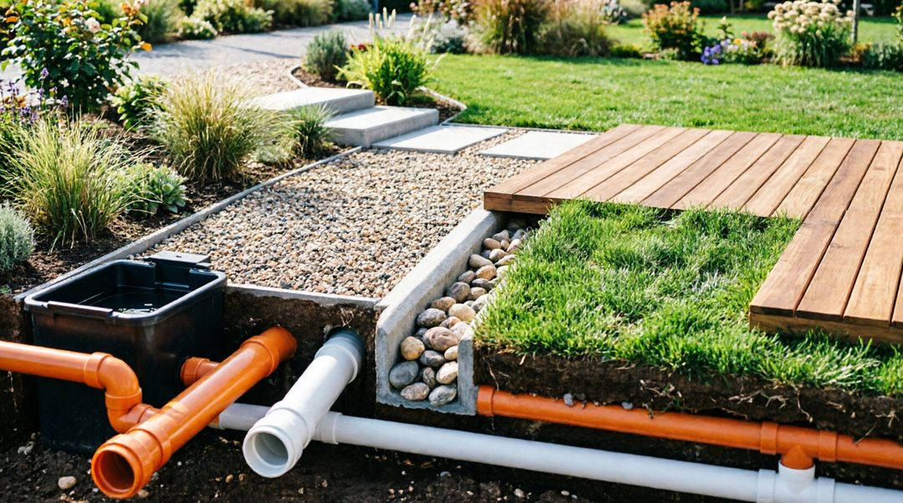
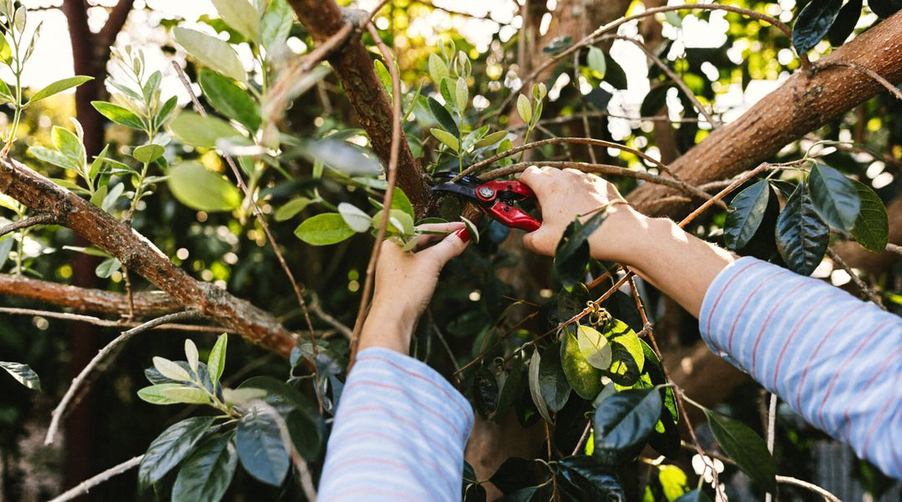
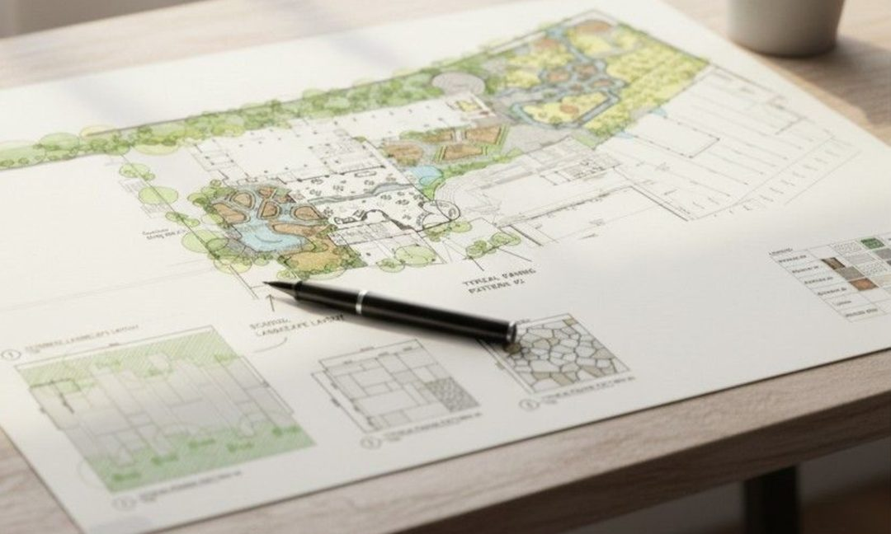

Срок выполнения: от 2 недель.
Рекомендуемые исходные данные: топосъёмка участка.

Разрабатываем ландшафтные проекты с привязкой к местному климату и грунтам. В результате вы получаете готовое решение:
Работаем как с небольшими дачами, так и с большими участками под усадьбу. Все чертежи готовы для строителей.
Срок выполнения: от 2 недель.

Газон, цветники, крупномеры. Чтобы участок задышал, создаём зелёные зоны с умом. Что можем сделать для вас:
Подбираем только районированные растения — они не вымерзнут и не засохнут. Рулонный газон в Тобольске привезём и уложим за день.

Садовые дорожки, отмостка дома, зона барбекю или площадка под парковку — мощение любой сложности. Используем тротуарную плитку, клинкер, гранит. Все этапы под контролем:
Итоговая смета остаётся неизменной после подписания договора.
В составе документации: разбивочный план, планы покрытий, конструктивные разрезы дорожных одежд.
Срок выполнения: от 3 недель. Исходные данные: топосъёмка, план участка.

Функциональный свет и декор — освещение, которое делает участок безопасным и волшебным. Что входит в услугу:
Энергоэффективные садовые светильники, устойчивые к морозам. Управление с пульта или автоматики.
В составе документации: план расположения светильников, схема электропитания, спецификация оборудования.
Срок выполнения: от 1 недели. Исходные данные: генплан/план участка.

Забыть про лейки и шланги — устанавливаем системы автоматического полива любой сложности. Что входит в услугу:
Подходит для газонов, цветников, огорода и теплиц.
В составе документации: план расстановки дождевателей, схема трубопроводов, спецификация оборудования.
Срок выполнения: от 2 недель. Исходные данные: дендроплан, генплан/план участка.
Доступна дилерская поставка системы автополива с монтажом.

Индивидуальный расчёт стоимости в зависимости от площади участка, количества построек и типа грунта.
Желательно предоставить: топосъёмку, геологию участка.
Срок выполнения: от 5 дней.

Стрижка туй, обрезка деревьев, аэрация газона. Даже продуманный сад требует регулярной заботы. Предлагаем разовые услуги и абонемент на сезон:
Приезжаем по заявке или работаем по графику.

Стоимость зависит от количества выездов и дальности объекта. Что входит в услугу: